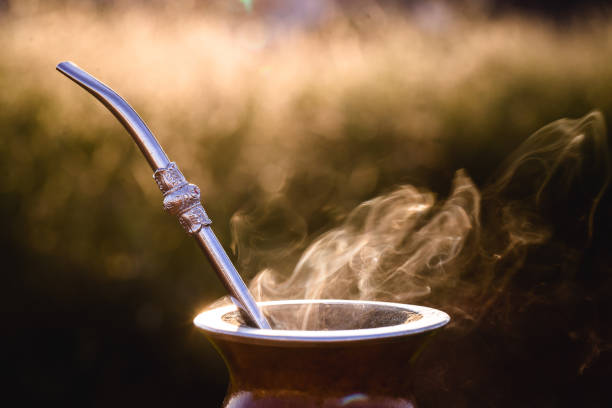

El origen del mate

¿Qué es el Mate?:
El mate Misionero tiene sus raíces en la provincia de Misiones, en el
noreste de Argentina, una región conocida por sus vastos yerbatales.
La historia del mate se remonta a los pueblos guaraníes, quienes fueron
los primeros en descubrir las propiedades energizantes de las hojas de
yerba mate.
Con la llegada de los colonizadores españoles, el consumo de mate se
difundió y se convirtió en una tradición profundamente arraigada en la
cultura argentina.
En Misiones, el cultivo de yerba mate se ha perfeccionado a lo largo de
los siglos, adaptando técnicas sostenibles que preservan el medio
ambiente.
La yerba mate no solo es una bebida; es un símbolo de amistad
y hospitalidad."
El mate está rodeado de numerosas leyendas y mitos que reflejan su
importancia cultural. Una de las leyendas guaraníes más conocidas cuenta
la historia de dos diosas,
Yari y Araí, que descendieron a la tierra y
fueron acogidas por un anciano. Como agradecimiento, Yari convirtió una
planta en yerba mate para que el anciano pudiera disfrutar
de una bebida
que le brindara fuerza y compañía.
Otra historia popular es la del
cazador guaraní que, tras salvar a una anciana en el bosque, recibió de
ella la planta de yerba mate como recompensa.
Estas leyendas no solo
destacan el valor del mate como bebida, sino también su papel como
símbolo de generosidad y amistad.